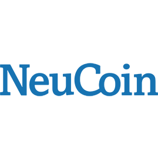
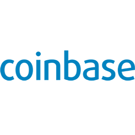

After 2 years spent in the Parisian tech startup industry, 2 years working in the bitcoin ecosystem and 2 years working in between London, Paris and NYC on startup projects
- I'm now learning how to code with Le Wagon.
| Head of Marketing - 2016 - 6 months In charge of bringing 3,000+ talented tech and non-tech talent to our bi-annual events. Worked on our international expansion and have organised a first event in New York on SMR's behalf, in partnership with Women in Tech NY. |
|
|  | Head of Community - 2015 - 1.5 year I was in charge of creating and managing a community as well as our social media strategy. Successfully managed a $1M crowdfunding campaign. |
|  | Merchant Support - 2014 - 6 months Responsible for the on-boarding of Merchants - both online and offline - who wish to accept bitcoin as a payment method. |
| Partnerships Manager - 2013 - 1 year A few 1st-year missions at TheFamily: - "Unfair advantages" development: partnerships with 30+ web and tech companies (AWS, Twilio, Stripe, Sendgrid, etc) - Management of the startups portfolio (60+ companies today) - Organization and management of events aimed at different stakeholders of the ecosystem - Development of the project TheFamily Reboot: investing in and transforming underperforming companies thanks to technology and new business models. |
|
| Business Associate - 2012 - 6 months My role was to help the 12 incubated startups until Demo Day on the following points: - Strategic and business vision - Fundraising - Elaboration of a business plan and a viable financial model (when relevant) |
|
| Analyst - 2012 - 6 months Alven Capital is a Parisian VC fund. It invests in web and tech companies, from early to development stages (initial investment from 200K€ to 5M€). - Deal flow sourcing, - Preliminary analysis of new investment opportunities, - Meeting with the most promising entrepreneurs, - Weekly pitch of the projects to Alven's investment committee, - Technology watch, thorough studies and analysis on relevant investment subjects, - Work on the investment in SoCloz (web-to-store startup), from the first contact to the first board committee. |
| Cooking | Check out my food blog :) |
| Sailing | On my bucket list: doing one transatlantic. For now, only a Hobbicat racer. |
| Outdoors | Diving, Hiking, Running: Probably won't stay in London forever!! |